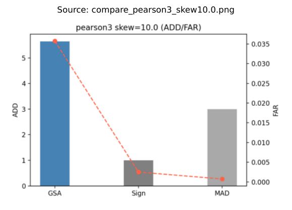
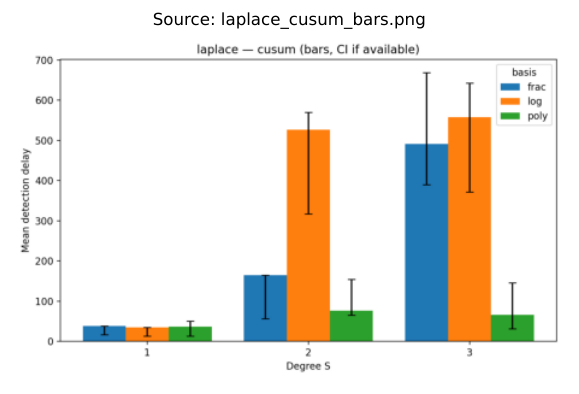

The paper's six core theorems on approximate LLR statistics, information bounds and FAR-ADD relations are formally proved in Lean 4 with Mathlib, with a public repository.
Abstract
Generalized stochastic approximation replaces the log-likelihood ratio of a sequential change-point problem by an affine function of a fixed feature dictionary, whose coefficients solve a normal system in the dictionary's moments under the pre- and post-change laws. The increment is a rescaled orthogonal projection of the bounded score, and the information it carries is bounded by the triangular discrimination between the laws. The dictionary decides what is detectable: a symmetry shared by both laws annihilates a whole parity at every order, and one further column raises the information by an explicit bordered-metric increment. A single efficiency factor, at most one, governs all three procedures the increment drives – cumulative-sum, Shiryaev-Roberts and Shiryaev – through false-alarm and delay bounds valid at every threshold. Estimated coefficients are consistent and asymptotically normal. A Monte-Carlo study measures the factor against the delay ratio it predicts, and locates the order at which the dictionary stops paying.
Problem
Sequential change-point detection with CUSUM needs the log-likelihood ratio, but pre- and post-change densities are often unknown and non-Gaussian. Gaussian approximations discard the higher-moment information that matters for small relative changes.
Approach
The LLR is replaced by an affine function of a fixed feature dictionary (polynomial, fractional-power or logarithmic basis). Its coefficients solve a normal system in the dictionary moments under both laws. An efficiency factor governs false-alarm and delay bounds for the CUSUM, Shiryaev-Roberts and Shiryaev procedures. The core theorems (convergence, information functional, FAR-ADD relationship) are formalized in Lean 4 with Mathlib 4.26, using no sorry and one declared axiom.
Results
With third-order polynomial approximation, detection delay for weak changes in strongly skewed data falls by 30-36% relative to classical CUSUM. On public benchmarks, the method stays effective on heavy-tailed data where the baselines fail. All six theorems build in Lean with about 95% coverage.

Figure 5: Comparison of the poly / frac / log bases on the Pearson III distribution with skewness \gamma_{3}=10 . The fractional-power basis compresses the dynamic range, enabling lower ADD at the same FAR.

Figure 4: Comparison of GSA-CUSUM with baselines on the Laplace distribution (bar chart of ADD; n_{\text{trials}} as in the source experiment in reports/charts/ ).